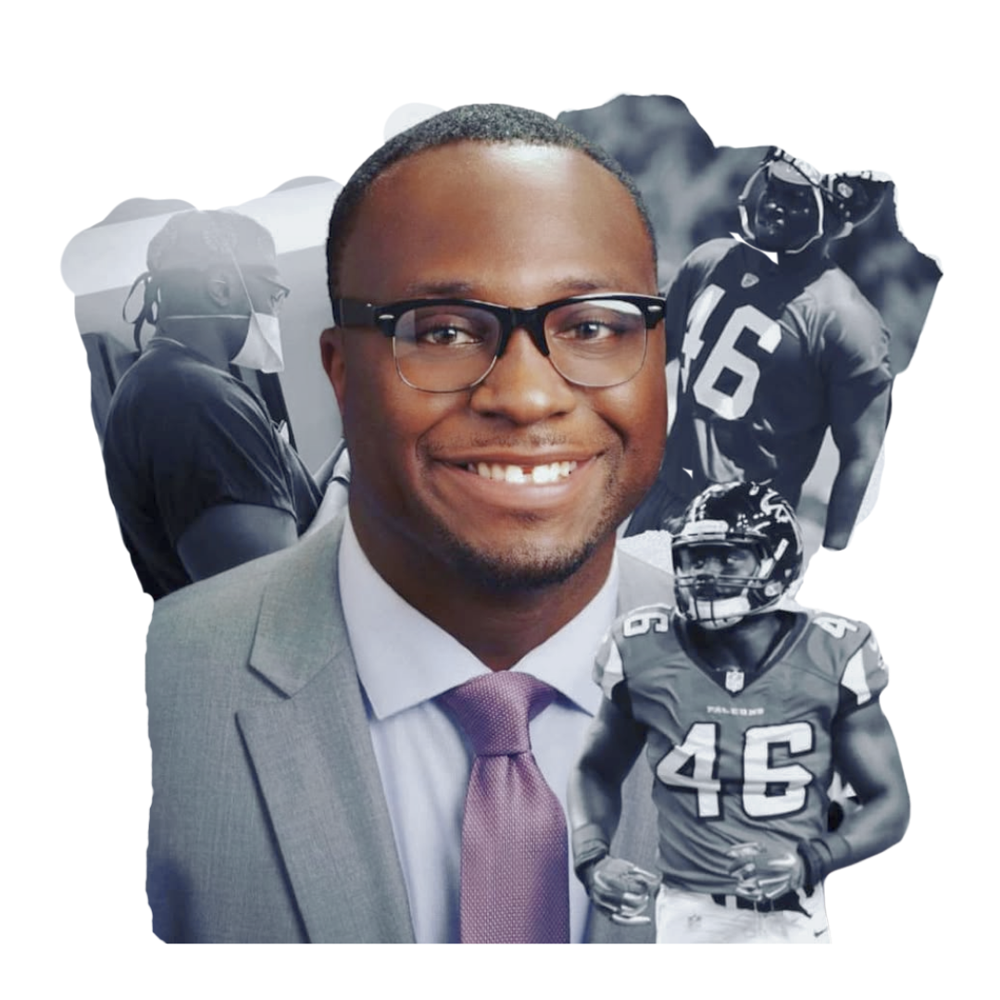
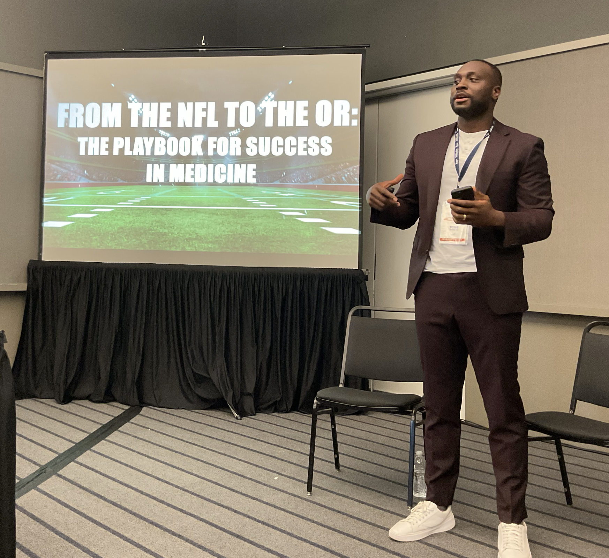
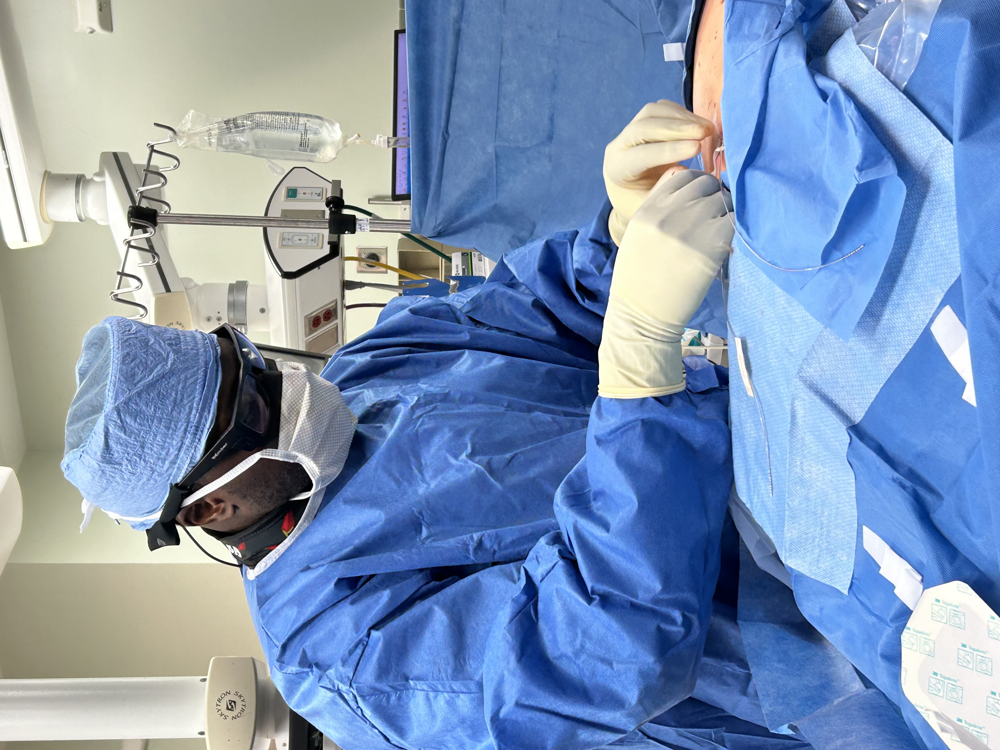
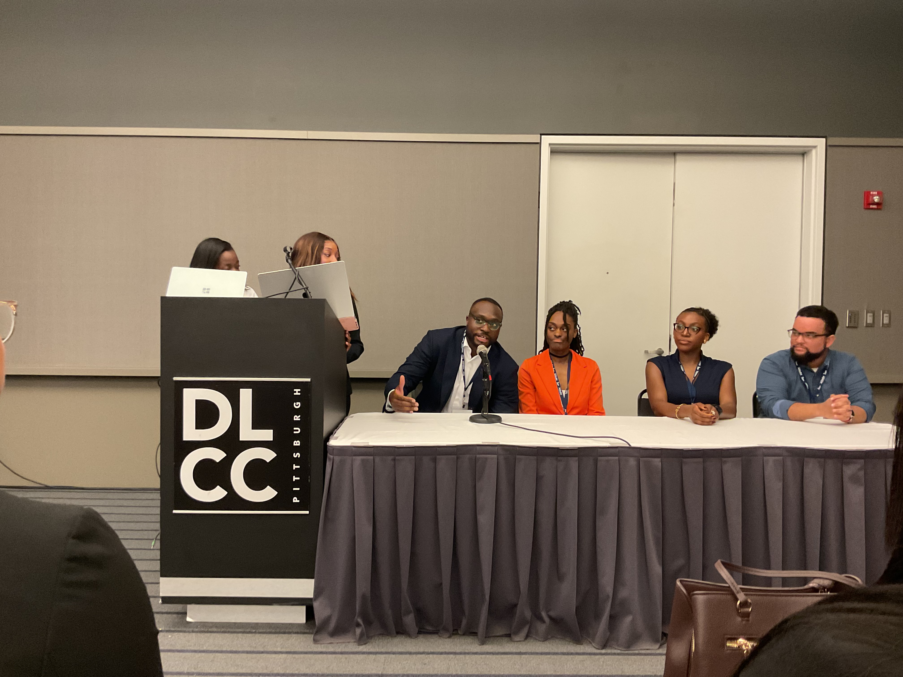
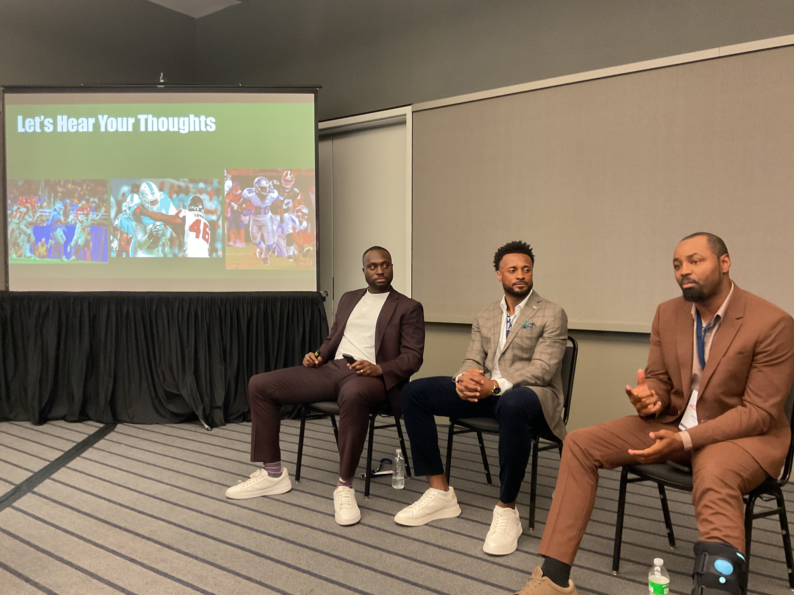
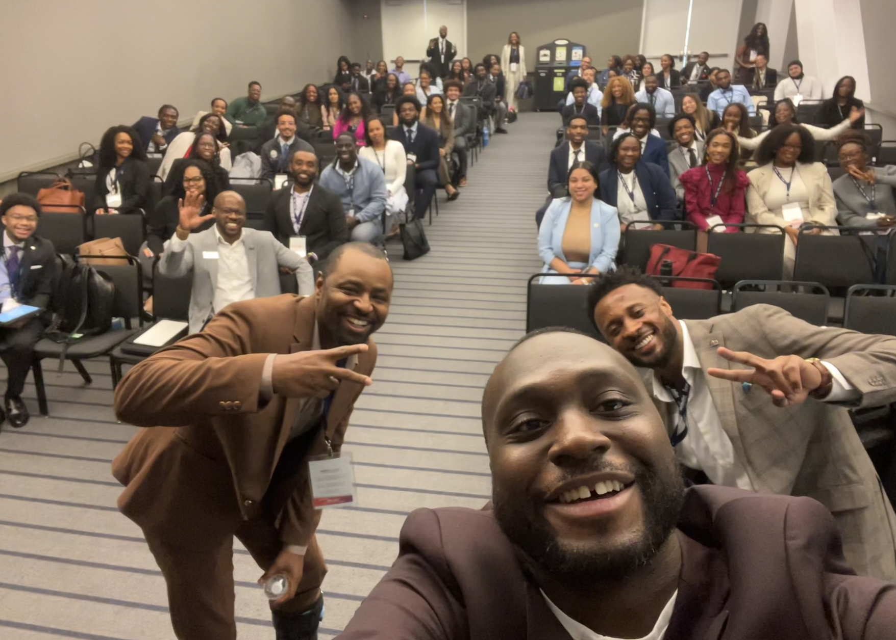

Mentorship
Helping students and trainees navigate difficult transitions and build durable professional habits.
Medicine · Education · Leadership
Boris Anyama, MD is a board-certified anesthesiologist and interventional pain physician, Assistant Professor at the University of Pittsburgh School of Medicine, and former Atlanta Falcons linebacker.

01 / About
Medicine was not the first high-performance environment Boris entered.
Before becoming a physician, he played Division I football at the University of Louisiana and signed with the Atlanta Falcons in 2015. When injury closed that chapter, the same discipline fueled a transition into medicine. He was drawn to anesthesiology by an interest in physiology, pharmacology, and the collaborative environment of the operating room.
Today, Dr. Anyama is a board-certified anesthesiologist and interventional pain physician and an Assistant Professor at the University of Pittsburgh School of Medicine. Beyond clinical practice, he served as president of the NFL Players Association’s Pittsburgh Former Players Chapter and is passionate about community and mentorship.
He invests in people, backs ventures worth believing in, and stays close to problems worth solving.
LinkedIn profile
The common thread
Use what you have learned to help the people around you move forward.
02 / Clinical work

Clinical practicePain medicine is where physiology, function, and quality of life intersect.
In addition to anesthesiology, Dr. Anyama practices interventional pain medicine within the UPMC system and serves as an Assistant Professor at the University of Pittsburgh School of Medicine.
For many people living with pain, the choices can feel limited to medication or surgery. Interventional pain medicine can provide another path.
As someone with lived experience of sports-related injuries, Dr. Anyama understands how pain can affect more than a single joint or body part—it can change how you move, train, work, and live. His approach combines multimodal care, including interventional procedures and targeted neuromodulation therapies when appropriate, with the goal of reducing pain, preserving function, and improving quality of life.
This is a professional profile and is not a substitute for clinical or appointment information.
03 / Teaching
Teaching across the healthcare continuum.
Boris works with students, medical trainees, and healthcare professionals. His approach is grounded in practical questions: How do you prepare? How do you perform when the situation changes? How do you become useful to the people around you?
Helping students and trainees navigate difficult transitions and build durable professional habits.
Teaching trainees to master high-stakes situations through practical preparation, clear communication, and dependable teamwork.
Dr. Anyama has delivered more than 40 invited lectures, grand rounds, and journal clubs, and was recognized by the Gateway Medical Society for contributions to medical education and mentorship.
Faculty profile04 / Speaking
Performance, medicine, identity, and professional transition.
Boris speaks to audiences at the local, regional, and national level, drawing on his journey from professional football to academic medicine. His talks explore performance under pressure, navigating major transitions, pain and recovery, and the lessons that carry across disciplines.
At the center of his approach is D.R.I.V.E., a five-part framework developed from the principles that shaped his path from athlete to physician—a practical playbook for pursuing success through preparation, adaptability, and purpose.



Topics have included
05 / Leadership
Medicine is only one part of Boris’s professional life.
Past president and current board member of the NFLPA Pittsburgh Former Players Chapter, and a scholarship committee member with the Professional Athletes Foundation—supporting former players and current athletes as they navigate identity, performance, and purpose beyond the game.
Working with organizations across Pittsburgh on disparities, community outreach initiatives, and health and wellness.
Serving on national medical committees that shape the landscape around patient safety, education, and evolving standards of care.
06 / Scholarship
Regional Anesthesia and Pain Medicine · 2025
A peer-reviewed letter examining the emergence of medetomidine in the illicit drug supply and its implications for perioperative medicine, pain, and public health.
Current Pain and Headache Reports · 2019
EM Cornett, RJ Kline, SL Robichaux, JB Green, BC Anyama, SA Gennuso, et al.